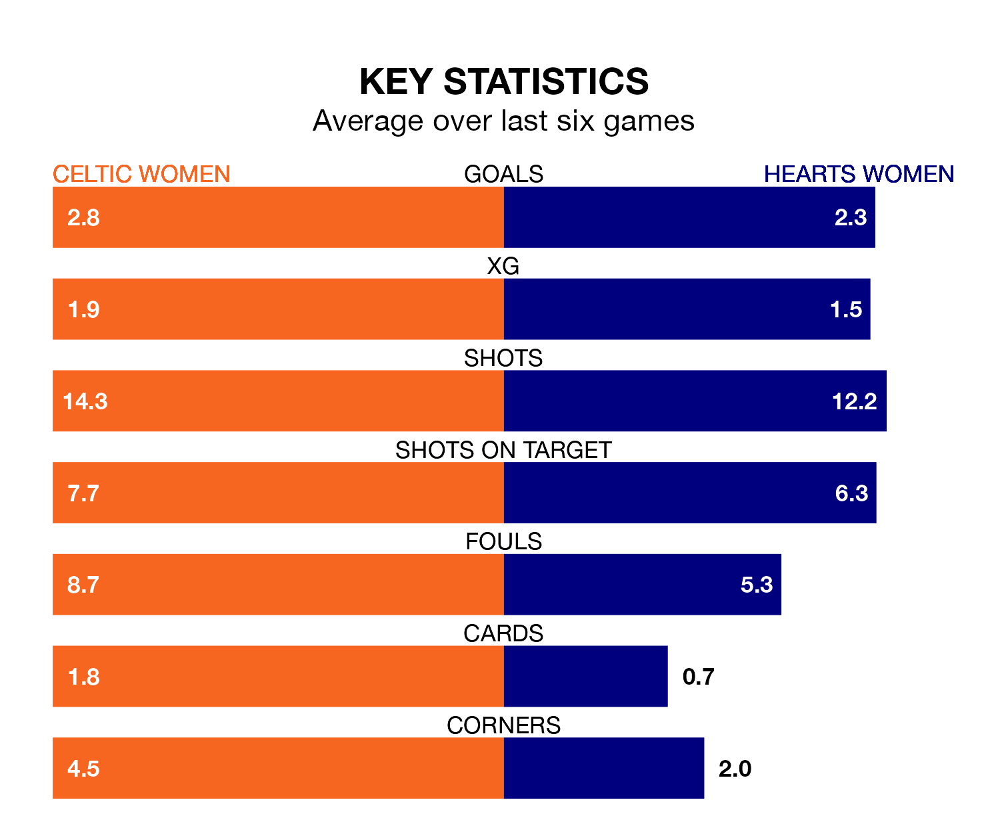

Two of SWPL 1's top sides face each other at the Excelsior Stadium in Sunday's kick-off, when table-topping Celtic Women host fourth-placed Hearts Women.
Celtic have picked up 22 wins and two draws from 26 games so far this season, and sit 17 points above the visitors going into the 4.010pm match.
Hearts, meanwhile, have won 16 and drawn three, picking up 51 points.
With 112 goals in 26 games so far this season, Celtic are the league's highest scorers with 4.3 goals per game. And they are conceding fewer than average, letting in 15 goals at a rate of 0.6 per game.
Hearts are also above average scorers, with 2.5 goals per game, compared to a league average of 2.1. They have conceded 0.9 goals per game.
In Amy Gallagher, the hosts have the league's most on-form striker so far this season. She has notched 22 goals in 25 appearances.
Her goal rate of one every 93 minutes is quicker than that of Katie Jayne Lockwood, the away side's top scorer with a goal every 110 minutes, and a total of 15 goals in 19 games.
Celtic are in fantastic form in SWPL 1, with five wins and a draw from their last six games.
With five wins and one loss over that period, Hearts's form is slightly worse – they have taken 15 points from 18, compared to Celtic's 16.
In the last 10 years, Celtic and Hearts have played each other on 13 occasions. Celtic won 12 of them and they drew once.
On average, Celtic scored 3.5 goals and Hearts 0.3 in those matches.
Their last meeting was on December 17, when they played out a 1-1 draw.
Celtic's last match was on Wednesday, a 1-0 win against Hibernian Women, with Caitlin Hayes getting the goal for Celtic.
Hearts beat Rangers Women 1-0 last time out, also on Wednesday, with Lockwood on the scoresheet.
Updated: 15:40 (UTC), 18/04/24